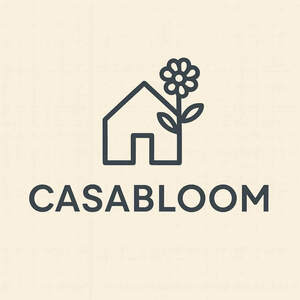

Trade Mark Journal No.2025/043 24 October 2025
UK00004238294 23 July 2025 (4,18,20,24,25)

- Class 4
- Candle torches; Tealight candles; Candle wax; Candles; Votive candles; Candles and wicks for candles for lighting; Wicks for candles; Scented candles; Wicks for candles for lighting; Candles and wicks for lighting; Tea light candles; Candles for lighting; Candle assemblies; Fragranced candles; Tallow candles; Nightlights [candles]; Candles for use as nightlights; Table candles; Soy candles; Candles in tins; Perfumed candles; Candles (Perfumed -); Christmas lights [candles]; Aromatherapy fragrance candles; Wax for making candles; Church candles; Candles for night lights; Floating candles; Christmas tree candles; Candles (Christmas tree -); Musk scented candles; Beeswax for use in the manufacture of candles; Fruit candles; Tealights; Lamp wicks; Wicks (Lamp -); Christmas tree ornaments for illumination [candles]; Bougies in the nature of wax candles; Christmas tree decorations for illumination [candles]; Candles for use in the decoration of cakes; Grave candles, non-electric; Candles for absorbing smoke; Wicks for lighting; Wicks for oil lamps; Wax lights; Wax for lighting; Lamp oil; Lamp oils; Special occasion candles; Tapers for lighting; Butane for lighting; Candles containing insect repellent; Paraffin wax; Lamp fuel; Tea lights.
- Class 18
- Leather; Leather and imitation leather; Leather and imitations of leather; Leather cloth; Tanned leather; Saddlery of leather; Polyurethane leather; Leather handbags; Laces (Leather -); Leather laces; Synthetic leather; Leather for shoes; Leather straps; Straps (Leather -); Leather thongs; Leather briefcases; Leather purses; Boxes of leather or leather board; Leather for furniture; Leather bags; Leather wallets; Vegan leather; Imitation leather; Leather (Imitation -); Studs of leather; Straps of leather [saddlery]; Leather pouches; Pouches of leather; Leather cord; Moleskin [imitation of leather]; Moleskin [imitation leather]; Leather cords; Girths of leather; Leather leashes; Leashes (Leather -); Imitations of leather; Leather for harnesses; Leather suitcases; Imitation leather bags; Unworked leather; Briefcases [leather goods]; Bands of leather; All-purpose leather straps; Handbags made of leather; Briefcases made of leather; Leather boxes; Boxes of leather; Leather twist; Leather luggage straps; Leather cases; Trimmings of leather for furniture; Furniture (Leather trimmings for -); Leather trimmings for furniture; Leather thread; Thread (Leather -); Labels of leather; Leather shoulder belts; Belts (Leather shoulder -); Straps made of imitation leather; Key-cases of leather and skins; Valves of leather; Bags made of leather; Furniture coverings of leather; Coverings (Furniture -) of leather; Harness made from leather; Bags made of imitation leather; Straps (Leather shoulder -); Leather shoulder straps; Leather bags and wallets; Cases of imitation leather; Chin straps, of leather; Lashes [whips]; Dog coats; Dog collars; Dog leashes; Dog shoes; Raincoats for pet dogs; Cat collars; Rawhide chews for dogs; Coats for dogs; Dog clothing; Pet hair bows; Dog parkas; Dog leads; Dog bellybands; Animal leashes; Clothing for dogs; Dog apparel; Collars for cats; Coats for cats; Collars for pets; Horse collars; Cat o' nine tails; Leashes for animals; Pet clothing; Clothing for animals; Clothing for pets; Pets (Clothing for -); Bags for sports clothing.
- Class 20
- Bed mattresses; Mattresses; Futon mattresses [other than childbirth mattresses]; Mattress toppers; Foam mattresses; Mattress pads; Mattress (Straw -); Straw mattress; Beds, bedding, mattresses, pillows and cushions; Foam camping mattresses; Latex mattresses; Mattress bases; Air mattresses; Mattresses [other than child birth mattresses]; Floating inflatable mattresses [airbeds]; Spring mattresses; Mattresses (Spring -); Camping mattresses; Straw mattresses; Nap mats [cushions or mattresses]; Sleeping mats for camping [mattresses]; Sofa beds; Bedding for cots [other than bed linen]; Bed slats; Divan beds; Beds incorporating inner sprung mattresses; Inner sprung mattresses; Inflatable mattresses for use when camping; Memory foam pillows; Air mattresses for use when camping; Pillows; Inflatable pillows; Latex pillows; Bedding for nursery cots [other than bed linen]; Air pillows; Air bed lounger; Bunk beds; Bed chairs; Beds; Bumper guards for cots, other than bed linen; Fire resistant mattresses; Inflatable mattresses, other than for medical purposes; Bamboo pillows; Bath pillows; Bumper guards for cribs, other than bed linen; Chair beds; Nursing pillows; Maternity pillows; Bed rails; Bed frames; Scented pillows; Foldaway beds; U-shaped pillows; Mattresses made of flexible wood; Futons; Inflatable pet beds; Cushions [furniture]; Stuffed pillows; Air cushions; Infant beds; Furniture being convertible into beds; Support pillows for use in baby seating; Portable mattresses for automobiles; Travel pillows; Beds of wood; Storage boxes for pillows [furniture]; Hybrid beds being soft sided waterbeds [other than for medical use]; Adjustable beds; Dog kennels; Dog beds; Dog houses [kennels]; Dog baskets; Cat beds; Dog tags, not of metal; Pet grooming tables; Non-metal dog tags; Animal teeth; Pet crates; Covers for clothing [wardrobe].
- Class 24
- Mattress covers; Ticks (mattress and pillow coverings); Covers for mattresses; Contoured mattress covers; Mattress slips [other than incontinence]; Ticks [mattress covers]; Bed blankets; Blankets (Bed -); Crib bumpers [bed linen]; Bed linen and blankets; Bed pads; Cot bumpers [bed linen]; Bed linen; Linen for the bed; Linen (Bed -); Sofa blankets; Valanced bed sheets; Bed clothes and blankets; Fabric bed valances; Protective loose covers for mattresses and furniture; Comforters for beds; Silk bed blankets; Quilted blankets [bedding]; Bed quilts; Futon quilts; Bed coverings; Bed valances; Bed clothes; Flat bed sheets; Bed blankets made of cotton; Shams (Pillow -); Pillow shams; Fitted bed sheets; Comforters (bedding); Bed sheets of plastic [not being incontinence sheets]; Bed sheets of plastic, not being incontinence sheets; Canopies (bed linen); Crib sheets; Pillowcases [pillow slips]; Quilt bedding mats; Bed covers; Bed canopies; Infants' bed linen; Valances for beds; Cot sheets; Bed linen of paper; Bed sheets of paper; Valanced bed covers; Bedsheets of leather; Woven fabrics imitating leather; Jersey fabrics for clothing; Textile piece goods for clothing; Fabric for use in the manufacture of clothing.
- Class 25
- Bed jackets; Bed socks; Clothing; Knitwear [clothing]; Jackets [clothing]; Ready-to-wear clothing; Woolen clothing; Furs [clothing]; Garments for protecting clothing; Layettes [clothing]; Clothing layettes; Linen clothing; Headbands [clothing]; Headbands for clothing; Gloves [clothing]; Gloves as clothing; Clothes; Aprons [clothing]; Maternity clothing; Kerchiefs [clothing]; Jerseys [clothing]; Denims [clothing]; Shorts [clothing]; Cashmere clothing; Capes (clothing); Oilskins [clothing]; Gabardines [clothing]; Leather clothing; Clothing of leather; Leather (Clothing of -); Silk clothing; Parts of clothing, footwear and headgear; Collars [clothing]; Knitted clothing; Veils [clothing]; Hoods [clothing]; Windproof clothing; Corsets [clothing, foundation garments]; Embroidered clothing; Wristbands [clothing]; Belts [clothing]; Belts for clothing; Bandeaux [clothing]; Rainproof clothing; Waterproof clothing; Casual clothing; Visors [clothing]; Jackets being sports clothing; Ready-made clothing; Jackets (Stuff -) [clothing]; Stuff jackets [clothing]; Playsuits [clothing]; Bottoms [clothing]; Clothing for leisure wear; Latex clothing; Trunks being clothing; Woven clothing; Drawers [clothing]; Drawers as clothing; Infant clothing; Leisure clothing; Clothing for sports; Sports clothing; Ties [clothing]; Athletic clothing; Clothing for children; Muffs [clothing]; Bodies [clothing]; Clothing for babies; Clothing for infants; Tops [clothing]; Clothing for cycling; Weatherproof clothing; Pockets for clothing; Fabric belts [clothing]; Water-resistant clothing; Triathlon clothing; Handwarmers [clothing]; Clothing for skiing; Beach clothing; Chaps (clothing); Thermal clothing; Cowls [clothing]; Men's clothing; Fishing clothing; Braces for clothing; Mitts [clothing]; Dance clothing.
Ayesha Sarwar